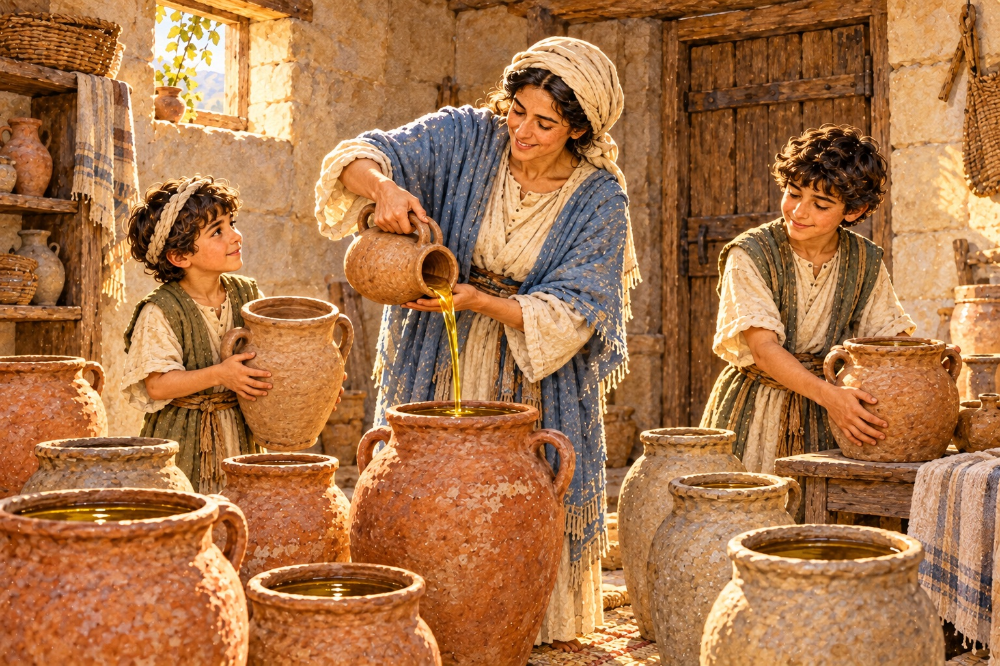
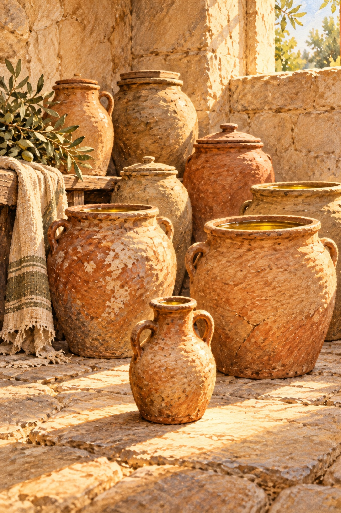

「如果再多一點，就好了。」
多一點時間，多一些人手，多一筆能夠周轉的經費。面對眼前的難題，我們常覺得，只要補上那個缺口，事情就有辦法繼續。
可是，資源尚未到位，日子仍然一天天過去。需要照顧的人還在，該處理的問題也還在。我們一面禱告，一面等待，心裡卻越來越著急：「主啊，我還能怎麼做？」
有些缺乏，確實需要外來的幫助。有些壓力，也超過一個人能夠承受的範圍。
但在尋求幫助的同時，我們也可以重新看看手中所有的：還有什麼能夠使用？哪些需要可以說得更清楚？若有人願意參與，我們是否已經預備好，讓這份幫助真正派上用場？
《列王紀下》第四章，讓我們看見一個家庭怎樣在困境裡，從一瓶油和借來的空器皿，經歷上帝的供應。
一瓶油，也值得被看見
一位先知門徒的妻子，來向以利沙呼求。
她的丈夫已經去世，債主又要來取她的兩個兒子作奴僕。
喪夫的悲傷尚未過去，她還得面對債務，以及孩子可能被帶走的危機。
她需要一個出路，讓這個家能夠繼續走下去。
以利沙先問她，可以為她做什麼，接著又說：
「你告訴我，你家裡有甚麼？」
她回答，家中除了一瓶油之外，沒有什麼。
那一瓶油，與眼前迫切的需要相比，顯得如此微小。
然而，以利沙接下來的吩咐，正是從她仍然擁有的這瓶油開始。
我們面對困難時，也很容易只看見自己缺少的部分。沒有足夠的經費，沒有完整的團隊，也沒有能夠立刻解決問題的辦法。看久了，心裡便只剩下一句話：「我什麼都沒有。」
這時，值得停下來，再看仔細一點。
也許還有一項熟悉的能力，一段能夠安排的時間，一個可以商量的人，或是一份能與別人共同使用的資源。
這些未必足以解決全部的問題，卻能幫助我們看清楚，現在可以從哪裡著手，又有哪些缺口需要尋求支援。
不要因為手中的一點，與眼前的需要相差太遠，就連它也忽略了。
把需要說出來，讓人有機會參與
以利沙接著吩咐婦人：
「你去，向你眾鄰舍借空器皿，不要少借。」
他也要她回到家裡，關上門，和兒子一起將油倒進所有的器皿中，倒滿的就放在一邊。
婦人照著吩咐去了。後來，兒子把器皿拿來，她就倒油。器皿都滿了，她請兒子再拿器皿來，兒子回答，已經沒有器皿了，油便止住。
這段記載裡，有一個容易被略過的細節：那些器皿，是借來的。
婦人原先沒有足夠的器皿，便照著吩咐向鄰舍借。倒油的時候，也有兒子與她一起參與。她回應主的帶領，包含了開口尋求幫助，也包含與家人一同動手。
這使我們重新思想「預備」的意思。
預備，有時是整理自己手中的資源；有時，則是把需要說出來，讓別人知道可以怎麼參與。
前面提過，為孩子找新空間的租約終於談妥，但接下來的裝修，又是一筆沒有著落的費用。設計師完成規劃，估算每坪要兩萬多元。我聽了，只知道手中根本沒有這些錢。
後來，我打了一通求助電話給熟識的牧師，把課後陪伴的需要說清楚，
也詢問能不能寄一些奉獻袋，請他在教會中說明，讓願意支持的人可以參與。那間教會的弟兄姊妹，後來為我們奉獻了裝修費用。
這份幫助，需要我先開口。電話裡要說的，不只是「我們很缺錢」，還有孩子需要怎樣的空間、眼前要處理什麼，以及別人可以怎麼幫忙。當我願意把事情說明白，原本自己扛著的需要，才有機會讓別人一起承擔。
有時，親手預備空器皿，就是勇敢開口，讓別人的幫助有機會進來。

油倒滿了，日子還要繼續
器皿裝滿之後，婦人去把事情告訴以利沙。他對她說：
「你去賣油還債，所剩的你和你兒子可以靠著度日。」
這個結尾，讓整個故事有了清楚的方向。
油要拿去賣，債務要處理，母親與孩子往後的生活，也需要有依靠。上帝所賜的供應，走進了這個家庭最迫切的處境裡。
對他們而言，那些裝滿的器皿，意味著債務有了可以處理的辦法，
一家人也有了繼續生活的出路。
因此，讀這個故事時，我們可以把目光從器皿的數量，帶回這個家庭的需要。
經文沒有責備婦人借得不夠，也沒有要我們用準備的規模，衡量一個人的信心。使油足以裝滿器皿的，是上帝的能力；婦人與兒子所做的，是照著領受的吩咐，預備並參與。
這讓我們有勇氣行動，也幫助我們記得：恩典出於主，不能用準備工作的多寡來換取。
我們可以認真預備，卻不必把每一個結果都當成自己信心是否足夠的證明。所領受的幫助，更值得被珍惜、被妥善使用，讓它真正回應眼前的需要。
一份經費，是否用在需要的地方？一個整理好的空間，是否有人能安心使用？一份安排，是否使原本混亂的生活，多了一點穩定？
當我們記得為什麼而預備，所做的事就更有方向。
讓預備，成為可以落實的照顧
生活裡，許多重要的事，都需要先為它留出空間。
想陪伴一位正在低潮中的朋友，就在時間表裡，留下一段能專心聽他說話的時間。
想讓一項工作順利交接，就把資料整理清楚，讓接手的人知道進度，也知道遇到問題時可以問誰。
想讓一家人多一點相處，就一起商量一個能夠做到的安排，讓那句「有空再說」，成為日子裡真正守得住的約定。
這些預備，看起來都不宏大，卻能使一份關心，有了可以實行的方式。
同樣地，當我們想展開一項事工，也可以先了解需要，把時間、人手與費用問清楚，讓承諾有能夠落實的安排。從目前能承擔的範圍開始，與人合作，
也在進行中繼續調整。
預備空器皿，可以很具體：整理、詢問、聯絡、安排，然後把答應的事做好。
這些工作也許沒有令人振奮的場面，卻常常決定了一份幫助來到時，我們能不能好好使用；也決定了自己所說的關心，能不能成為對方實際領受的照顧。
今天，若你正為缺乏感到焦慮，可以先把那份壓力告訴主，也找一個可信任的人，一起看清楚眼前的情況。
看看手中那一瓶油，也看看，有哪些器皿是可以去借、可以去預備的。
把手中所有的用起來，把需要的幫助說出來，把今天能預備的事做好。
願主使用這些預備，使一份心裡的關切，成為生活中可靠的扶持；也讓我們在領受與分享恩典的過程裡，更深認識祂。
M+ 實戰操練
反思提問（Connection）
在你正面對的困難裡，你最常注意的是缺少什麼，還是也看見了仍然可以使用的資源？
有哪一份需要，你一直獨自承擔，卻還沒有向合適的人說明？如果要開口求助，你可以怎麼把需要說得更具體？
你目前所做的預備，最終要幫助誰？有哪些安排，可以使這份幫助更貼近對方的生活？
真理宣告（Transition）
我宣告，上帝看見我的需要，也知道我的有限，祂是我在缺乏中的倚靠。
我願意珍惜手中所有的，認真使用；也願意誠實說明不足，勇敢求助，與人共同承擔。我願意讓心裡的關切，成為能夠落實的行動。
求主引導我的預備，使我有智慧承擔責任，也有謙卑領受幫助。願我忠心使用所領受的恩典，把自己無法掌握的結果，交託在祂手中。
今日行動（Action Plan）
為一件你想完成、卻一直覺得資源不足的事，預備一個今天就能使用的「空器皿」。
可以是一份清楚的分工表，一個整理好的空間，一段確實排進行事曆的時間，或一次把需要說明白的聯絡。
今天就完成這項預備，並向一位相關的人確認：這個安排是否派得上用場？還有哪個地方需要調整？
向主禱告：
「主啊，謝謝祢在我的有限中，仍然看顧我。求祢幫助我看見手中可以使用的，也賜我勇氣，把需要說出來。願我為所承擔的事認真預備，與人彼此扶持，忠心使用每一份領受的恩典。也求祢引導我，使我的預備能成為別人真實的幫助。奉耶穌基督的名禱告，阿們。」
